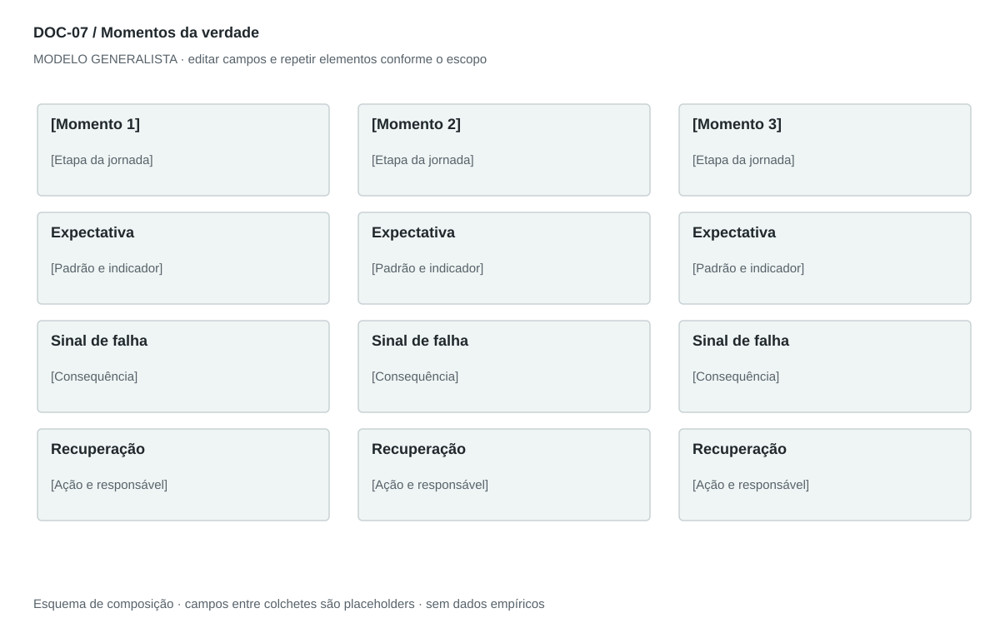

DOC-07 / Biblioteca documental generalista
Momentos da verdade
Identificar interações que alteram confiança e decisão de continuar, e definir resposta para sucesso e falha.
Modelo de investigação. Não representa uma análise concluída. Campos vazios devem permanecer identificados; não inventar dados para completar figuras.
Estrutura editorial
2–4 páginas em fichas indivisíveis por momento. Quadro final compara prioridade e indicador; evitar quebrar título e conteúdo em páginas distintas.
Visual previsto

Colunas por momento; três faixas: expectativa, sinal de falha e recuperação. Prioridade em rótulos textuais; barras somente com dados observados comparáveis.
Imagens: Ícone funcional para cada momento; captura de mensagem real opcional. Não desenhar avaliações ou satisfação fictícias.
Dicionário de dados
| Campo | Tipo | Dado necessário |
|---|
| momento_id | referencia | Identificador único do momento |
| etapa_id | referencia | Etapa da jornada correspondente |
| evento | texto | Condição que torna a interação decisiva |
| expectativa | texto | O que a pessoa precisa perceber |
| sucesso | texto | Experiência positiva e consequência |
| falha | texto | Experiência negativa e consequência |
| limiar | texto | Regra mensurável acordada, não número arbitrário |
| recuperacao | texto | Alternativa e responsável após a falha |
Todos os registros precisam de classificação, fonte, localização, datas, confiança e limitação. Números também precisam de unidade, moeda quando aplicável e período.
Modelo preenchível
Os quadros amarelos podem ser editados nesta página para impressão. Edições não são gravadas automaticamente: use o Markdown/JSON para manter uma versão ou imprima em PDF após editar.
[Negócio] · [Versão] · [Data-base] · [Autor] · [Audiência] · [Território]
Pergunta decisória: [A preencher]
Escopo: [A preencher]
1. Critério de seleção
Explique por que essas interações são decisivas, sem tratar todo contato como crítico.
[Análise + evidência + implicação + lacuna]
2. Fichas dos momentos
Evento, expectativa, melhor experiência, pior experiência e consequência na decisão.
[Análise + evidência + implicação + lacuna]
3. Padrão de serviço
Defina comportamento esperado, indicador, limiar e responsável.
[Análise + evidência + implicação + lacuna]
4. Recuperação
Falha detectável, ação, canal alternativo, prazo e limite de autonomia.
[Análise + evidência + implicação + lacuna]
5. Priorização e teste
Escolha momentos para observar primeiro e como validar impacto.
[Análise + evidência + implicação + lacuna]
Decisão e próximo passo
[Decisão e justificativa]
[Alternativa considerada]
[Condição de reversão]
[Ação, responsável, prazo e critério]
Fontes e limites
[Fonte + localização + datas + o que sustenta + limitações]
Critérios de revisão
- Cada momento referencia uma etapa existente.
- Expectativa tem tradução operacional e responsável.
- Não usar satisfação inventada para priorizar.
Estudo do arquivo original
DOC-07-fonte.pdf — Quatro páginas retrato. Seis momentos descritos com padrão repetido: evento, impacto positivo, impacto negativo e expectativa. Fecha com seis recomendações. As últimas linhas de algumas páginas abrem o título do momento seguinte, criando leitura interrompida.
Observação do original e adaptação recomendada são camadas distintas. Nomes, preços, localidades, contatos e conclusões do caso-fonte não devem preencher a nova análise.